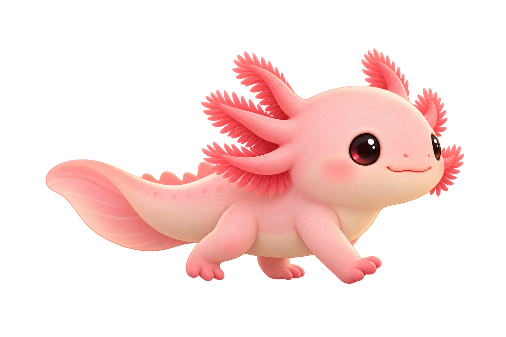

YOUR LITTLE DESKTOP COMPANION
A tiny wanderer
for your taskbar.
He’ll stroll around while you work, then curl up for a cozy nap when your mouse takes a break.
✦
✦
zzz

out for a little stroll
〰 TASKBAR PREVIEW
Roaming Napping after 45 sec idle
Lives at the edge
Always visible, never in your way.
Knows when to rest
Idle mouse? Nap time.
Just a little friend
No tasks. No notifications. Just vibes.